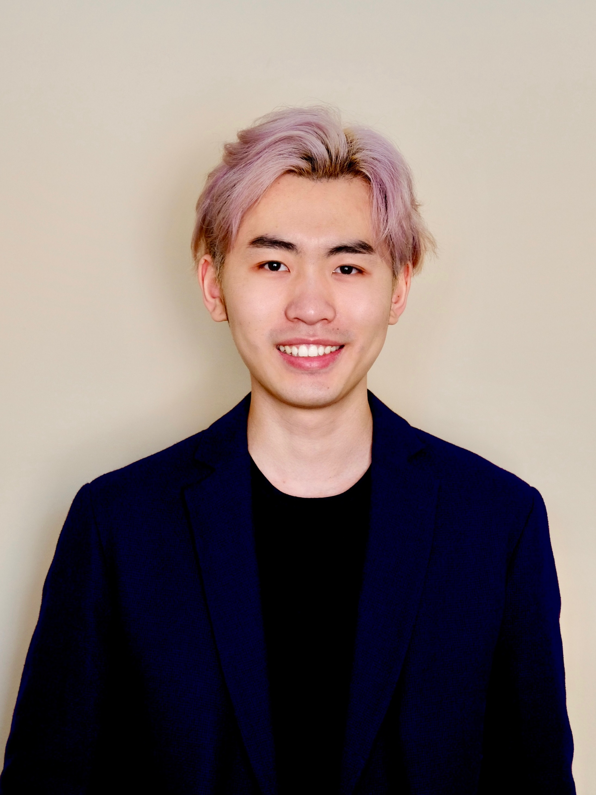

Bilingual · Queer-Affirming · Trauma-Informed中英双语 · 酷儿肯定 · 创伤知情
Every part of you is welcome here.在这里，
你不必急着解释自己。
Making room before making sense.越真实，越自在。
Bilingual psychotherapy for identity, relationships, intimacy, and belonging.中英双语心理治疗——探索爱与美、关系与自我、存在与价值。

Hi, I’m Taoru.你好，我是 Taoru。
I’m a bilingual psychotherapist based in New York, working with adults at the intersections of culture, identity, and relationships. My approach is collaborative and eclectic — grounded in curiosity and compassion, drawing from psychodynamic, EMDR, IFS, narrative, and relational modalities, woven together in whatever way best supports you.我是 Taoru Huang，一名在纽约执业的中英双语心理治疗师，长期陪伴在文化、身份与关系交叉处的成年来访者。我的工作方式是协作、整合式的，以好奇与关怀为基础，融合心理动力学、EMDR、内在家庭系统（IFS）、叙事治疗与关系取向，依照每个人的具体需要来编织。
My work is informed by multicultural, feminist, and queer theories, as well as my own perspective as an Asian queer therapist. I try to challenge the limits of Americentric, heteronormative models of therapy, so that together we can make a space where you can express, explore, and embrace who you really are.我的工作深受多元文化、女性主义与酷儿理论影响，也来自我作为一名亚裔酷儿治疗师的自身经验。我希望突破以美国为中心、异性恋规范化的传统框架的局限，与你一起创造一个安全的空间，让你可以表达、探索并拥抱真实的自己。
LMHC — Licensed Mental Health Counselor, New York State (#016431)LMHC — 纽约州持证心理健康咨询师（#016431）
M.A., Counseling for Mental Health & Wellness / LGBT Health, Education & Social Services — New York University心理健康与咨询 / LGBT 健康、教育与社会服务 硕士 — 纽约大学
Sex Therapy & Sexuality Education Certificate Program — University of Michigan性治疗与性教育证书项目 — 密歇根大学
EMDR · Internal Family Systems (IFS) · narrative & relational approaches · sex & relationship therapyEMDR · 内在家庭系统（IFS）· 叙事与关系取向 · 性治疗与伴侣治疗
Ways to work together一起工作的方式
Three ways to work together. Open any to read a little more.三种一起工作的方式，点开任意一项了解更多一点。
Individual Therapy个体治疗
A steady, confidential space to feel like yourself again.一个稳定而保密的空间，陪你重新找回自己。
Ongoing one-on-one sessions for anxiety, low mood, self-worth, identity, or a life change that’s weighing on you. A place to understand yourself and feel a little steadier again.持续的一对一会谈，陪你梳理焦虑、情绪低落、自我价值、身份认同，或让你感到沉重的人生变化——一个更理解自己、也更稳定的地方。
Relationship Therapy伴侣治疗
For partners of any structure, held with equal care.面向任何结构的伴侣，都以同等的用心相待。
For couples and partners working on communication, trust, or recurring conflict. We look at the dynamic between you, and how to stay close without losing yourselves. All relationship structures are welcome.面向正在处理沟通、信任或反复冲突的伴侣——一起看你们之间的动态，以及如何在亲近的同时不失去自己。欢迎各种形态的关系。
Sex Therapy性治疗
A shame-free space for desire, intimacy and pleasure.一个谈论欲望、亲密与愉悦的自在空间。
A comfortable space to talk about desire, intimacy, sexual concerns, and pleasure, for individuals and partners alike. It’s talk-based: no physical exams, and nothing you’re not ready for.一个自在的空间，谈论欲望、亲密、性方面的困扰与愉悦——个人与伴侣都适用。以谈话为主，没有身体检查，也不会有任何你尚未准备好的内容。
Where we often begin我们常常从这里开始
People rarely arrive with just one reason. More often it’s a few things at once, tangled together, and you might see yourself in more than one of these.人们很少只带着一个理由前来。更多时候，是好几件事同时缠绕在一起——你或许会在其中不止一处，认出自己。
LGBTQ+ IdentityLGBTQ+ 身份
Identity isn’t a single arrival. It keeps unfolding, and it deserves a place to be understood.身份不是一次抵达，而是持续展开的过程——它值得一个被理解的地方。
Asian & Immigrant Experiences亚裔与移民经验
Living between cultures and languages, and carrying the expectations that travel with them.生活在文化与语言之间——也承载着随之而来的种种期待。
Individuality & Togetherness独立与共处
The pull between closeness and autonomy: staying yourself while building a life with someone else.亲近与独立之间的拉扯——在与另一个人共建生活的同时，仍然做自己。
Desire & Intimacy欲望与亲密
A space where desire, pleasure, and vulnerability can be spoken about without shame.一个可以谈论欲望、愉悦与脆弱的空间，不必带着羞耻。
It begins with a conversation从一次对话开始
Reach out发出联系
A short email about what brings you in.一封简短的邮件，说说你为何前来。
A free consultation一次免费咨询
A relaxed 15 minutes to see how it feels.轻松的 15 分钟，先感受一下。
Your first session第一次会谈
We start wherever feels right for you.从让你觉得合适的地方开始。
Continue at your pace按你的节奏继续
No fixed timeline. We revisit it together.没有固定的期限，我们一起回顾。
Questions, answered常见问题，一一解答
Do you work in-person or online?你提供线下还是线上服务？
Sessions are currently online only for clients located in New York State, through HIPAA-compliant platforms.目前仅为纽约州来访者提供线上会谈，通过符合 HIPAA 隐私标准的平台进行。
What are your rates? Do you accept insurance?费用如何？是否接受保险？
Self-pay rates are $200 for an individual session and $250 for a relationship session, each 50 minutes. I'm in-network with Aetna and Anthem BCBS in New York, and your cost depends on your plan. For other insurers, I can provide superbills for out-of-network reimbursement. Depending on your coverage, you may be reimbursed for a good portion of the fee.自费费用为个体会谈 $200、伴侣会谈 $250，都是每次 50 分钟。我接收纽约州的 Aetna 和 Anthem BCBS 保险，实际费用取决于你的保险计划。若使用其他保险，我将提供 superbill 供你申请计划外报销。根据你的保险覆盖情况，你可能获得相当一部分费用的报销。
How do sliding-scale rates work?折扣费率如何运作？
If you feel we might be a good fit but the self-pay rates are hard to manage, please bring it up. We can talk about whether a reduced rate works for both of us. It's decided case by case.如果你觉得我们可能合适，但自费费用让你有些吃力，欢迎直接提出来。我们可以聊聊，看折扣费率是否会更可行。这将按具体情况决定。
What happens during the first session?第一次会谈会发生什么？
The first session is an intake — a chance for us to get to know each other. You can share what brings you here, get a feel for how I work, and together we'll talk about how we might work going forward. No pressure to have it all figured out by yourself.第一次会谈是初次评估（intake），我们可以借此机会来熟悉彼此。你可以聊聊是什么带你来到这里，感受一下我的工作方式，我们也会一起谈谈接下来将能如何合作。不必事先就把一切都独自想清楚。
How long does therapy usually last?心理治疗通常会持续多久？
It depends on your needs and goals. There's no commitment required. Solution-focused work tends to be shorter, around 3–6 months. Open-ended, exploratory work can continue for as long as you find it helpful.这取决于你的需要与目标。不需要任何长期承诺。聚焦解决的工作通常较短，约 3–6 个月。开放式的自我探索与持续支持，可以进行到你觉得有帮助为止。
What if I'm not sure therapy is right for me?如果我还不确定要不要开始，怎么办？
That's completely okay. Have a look around the site to get a sense of who I am and how I work, and email me any questions that aren't answered here. The 15-minute complimentary consultation is also a low-pressure way to chat and see if it feels right.这完全没关系。可以先在网站上四处看看，了解一下我是谁、如何工作，也欢迎通过邮件向我提问。我们可以通过免费的 15 分钟预咨询来聊一聊，看看感觉是否合适，然后再决定是否开始正式咨询。
Whenever you’re ready当你准备好的时候
The first step is just a message. No pressure, no forms. Tell me a little about what brings you here, and we’ll find a time from there.第一步只是一条消息——没有压力，也没有表格。告诉我一点是什么让你前来，我们再从那里找时间。
taoru@kueertherapy.comReplies usually within a couple of business days.通常会在一到两个工作日内回复。